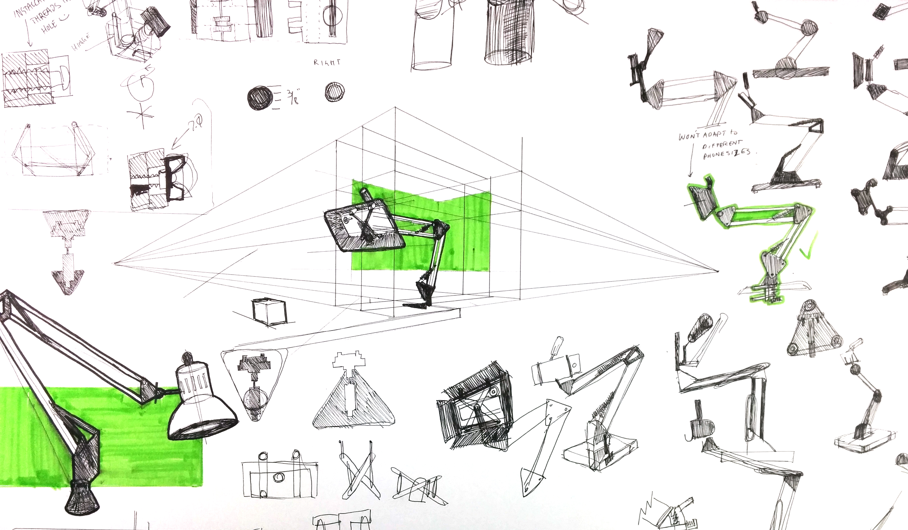

Design a fun way help people document their process that reinforces learning and enables people to teach each other.
prototype 1: pretending to be the app
Elizabeth: This project in particular was somewhat straight-forward, so the process photography was most helpful for concrete documentation of speed and corrections. That said, it did make me notice how often I have the urge to check my email, etc. throught my design process! I also think this would be a more enlightening process when paired with a less sequentially focused task (printmaking, digital design and printing, etc.)
Elizabeth: This project in particular was somewhat straight-forward, so the process photography was most helpful for concrete documentation of speed and corrections. That said, it did make me notice how often I have the urge to check my email, etc. throught my design process! I also think this would be a more enlightening process when paired with a less sequentially focused task (printmaking, digital design and printing, etc.)
I photographed ~10 students for a period of time and then asked them to reflect on their process based on the experience of what they saw. These are what they said. The question I was asking in this prototype is: "Is tracking process useful to reinforce learning?" The answer was yes!
prototype 2: User Interface
logging into accts
setting up an hourglass
taking the photos
selecting which to publish
adding a caption
With this prototype, the question I was trying to answer is "How should I display options to users, and facilitate the type of behavior I'm designing for?"
prototype 3: digial analogue
logging into accts
My next prototype was a mac app that has the same functionality as the app above, but screenshots instead of an app. I learned that some people want to let the app run for forever, and that it's really important to give people feedback with how long the app has been running, or it would be easy to neglect the app. Also, not all features need to be explained at the offset. It's okay to let users discover them.
prototype 4: exploring possibilities
My next prototype was all about exploring different modes of interaction. From this I took away three themes for further development: worn, environmental, and object.
prototype 5: prototyping form
This prototype was all about finding how to create formal hierarchy. This feels really awkward proportionally.
prototype 6: finding form

These drawings were used to figure out some of the mechanics and formal heirarchy. The central question was "How can this object communicate it's use intuitively?"
prototype 7: prototyping experience
This is the penultimate prototype for the app (ios & android), which allows me to do one more layer of prototyping before I move on to the final app. Code lives here.